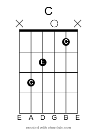

This lesson will help teach you the basic tools and ideas that will support your
growth as a musican.
Learn the open chords and understand how the chords in a key are built to boost your creative ability.
This Lesson Covers:
Navigating the Fretboard : Learn the E and A Strings.
Open Chords: Your First Real Tools
Major Scale: How Chords are built
1.1 — Navigating the Fretboard: E & A Strings
The fretboard might seem like a maze at first, but it follows a clear, logical pattern. In this lesson, we’ll break down how notes are laid out — starting with the most important strings for rhythm and riffs: the low E and A strings.
Understanding Notes on the Neck
There are 12 unique notes in music. After that, the notes repeat in the next octave. Here's the full sequence:
A – A♯/B♭ – B – C – C♯/D♭ – D – D♯/E♭ – E – F – F♯/G♭ – G – G♯/A♭
Each fret is one half step — moving from one note to the next (up or down) in that sequence. Two frets = a whole step.
There are no sharps or flats between E & F and B & C — they’re naturally a half step apart. Remember this pattern:
E → F (½ step), B → C (½ step)
The E and A Strings: The Backbone of the Guitar
Many power chords, bar chords, and root notes in riffs come from the low E and A strings. Learning the notes on these two strings will help you map out where root position chords are located Like our open chords.
Here’s a visual of the notes on the Low E and A strings up to the 12th fret:

The dots on the fretboard (3rd, 5th, 7th, 9th, and 12th frets) are your visual checkpoints. Learn the notes at these positions early — they’re your anchors.
All Notes on the Fretboard
Eventually, you’ll want to know every note across all six strings. Here’s a full fretboard map you can start referencing now:
Exercise: Name + Play
Start with the low E string (6th string).
Say each note name out loud as you play from open (E) to the 12th fret (E again).
Repeat the same process on the A string (5th string).
Use the dots on the fretboard to check yourself and track your progress.
Repeat this a few times a day. You'll quickly memorize the key positions and begin recognizing patterns in riffs and chord shapes.
Main Takeaway: Start learning what notes are where early. The E and A strings are your map. Get comfortable here first, then move on to the other strings until you know them all.
1.2 — Open Chords: Your First Real Tools
Open chords are your entry point to real music. These are the chords you’ll find in thousands of songs — they’re simple shapes, but incredibly powerful.
Most of these chords use open strings (unfretted notes) and contain the three notes that form a basic chord: the root, the third, and the fifth. These are called triads.
Below we have three types of chord: Major and Minor triads and Dominant (7th Chords).
Essential Open Chords
Here are the chords you’ll be using most often as a beginner. Learn to switch between them cleanly and comfortably.

Order of Difficulty:
E, Em, E7 - Easiest to play
A, Am, Amaj7
D major, D minor, D7
G major, G7
C major, C7
F maj7, F major (mini barre, index finger holds down the first fret of the high B and E strings) - Most difficult
Try Connecting Two Chords Together:
E → Em
E → A
B7 → E
E → A
Em → Am
A → Am
Am → C
G → C
D → G
Dm → G
Am → D7
C → E7
C -> Em
G7 -> C
Am → Fmaj7 or F
Chord Progressions to Try
Here are some simple chord progressions that sound good using only the open chords above. Strum each chord once to start, then try steady quarter notes.
C – G – Am – F
G – D – Em – C
E – A – B7 – E
D – G – A – D
Am – F – C – G
Dm – G – C – C
Em – C – D– G
All of these use only open-position chords and still sound great. You’re already making real music.
Triads and Octaves in Open Chords
Open chords often repeat the same notes across different octaves. For example, a C major chord has the notes C, E, G — but in the open shape, you might see two Cs, two Es, and a G.
One Sound, Many Places
The same chord can be played in lots of different spots on the neck — with slightly different shapes, voicings, and feel. Don’t let that overwhelm you. Start here, get familiar with these basic shapes and in lesson 3 we will look at more shapes and discuss their moveability, and know this:
You don’t need to know the whole neck to sound good. Start small and build from here.
Main Takeaway: Open chords give you everything you need to start making music. Learn and memorize these shapes, play them often, and trust that the fretboard will make more sense as you keep going.
1.3 – Building Chords from the Major Scale
You’ve played open chords — now it’s time to see how they’re built and how they all come from one place: the major scale.
What is the Major Scale?
The Major scale follows this pattern through our 12 possible notes starting on any note of your choosing, we will use C and G as our examples:
W - W - H - W - W - W - H W = Whole step (2 frets) H = Half Step (1 fret)
It looks like this on one string:
C Major

G Major
Step 1: The Root Position Major Scale (C and G)
We’ll start with two simple major scales based off of their open chord from earlier in the lesson: C major and G major.
This is a one octave C major scale, from C to C.
The blue colored notes are parts of the C major chord (C-E-G) and the red are neighboring notes that all exist and sound "right" within C major, and follow our pattern.
Notice how the above C major scale perfectly outlines the C major chord shown in section 1.2.
You may also notice that the G major scale doesn’t perfectly outline what was shown in section 1.2. This is because chords can extend multiple octaves—you don’t always need to play the full chord; you can cut it in half and it still contains all the notes of G major (G‑B‑D).
These are extended versions of the previous scales, they extend multiple octaves. How many combinations of C-E-G and G-B-D do you see? Notice how some shapes containing these notes resemble our previously learned open chord shapes.
For Example, the extended C major scale has a D shaped C chord using open strings and the High B string. The G major scale shows an A shaped G chord using just the open strings.
These are more ways to play the same thing more or less. Try and see how many versions of C major and G major you can find, listen to how different they feel, some lower some higher all of varying qualities.
Step 2: What Is a Triad?
A triad is a basic chord built from three notes:
Root – the starting note
3rd – defines major or minor
5th – gives stability
When you play a C chord, for example, you’re playing some combination of C, E, and G. Those three notes = a C major triad.
Step 3: Build Every Chord in a Key (Skip-a-Note Method)
You can build every chord in a key by applying this one method:
Start on a scale note
Skip one → take the next (3rd)
Skip one → take the next (5th)
Let’s use the C major scale: C – D – E – F – G – A – B
Start on each note and skip every other to build a triad:
C – E – G → C major
D – F – A → D minor
E – G – B → E minor
F – A – C → F major
G – B – D → G major
A – C – E → A minor
B – D – F → B diminished
Step 4: Roman Numerals for Chord Function
We label these chords using Roman numerals so we can apply the same formula to any key.
Minor = Lowercase Major = Uppercase Diminished = ° (Don't worry about this yet, you can use a dominant chord if possible (Dom7 Chord like B7 or E7))
Here’s the pattern in any major key:
I – ii – iii – IV – V – vi – vii°
In C major that gives you:
C (I)
Dm (ii)
Em (iii)
F (IV)
G (V)
Am (vi)
Bdim (vii°)
In G major, the exact same pattern gives you:
G (I)
Am (ii)
Bm (iii)
C (IV)
D (V)
Em (vi)
F♯dim (vii°)
It’s the same pattern of major and minor chords — just applied to a different root note (or key). That’s the beauty of theory, these chords always work well together.
For example if i asked you what a ii - V - I is in the key of C you could tell me: Dm - G - C. Now you can transpose chord progressions into
different keys.
Natural Minor and Introduction to Modes.
You may have heard of minor keys. Where do they come from?
The natural minor (or aeolian mode) scale uses the EXACT same notes as the major scale, just starting from the 6th note (vi). Our W-W-H-W-W-W-H pattern shifts becoming W-H-W-W-H-W-W
Lets look at this G major scale: We know G major is built of these notes using the skip a note method: (G-B-D)
Practice this G major scale from G to G, sounds kinda cheery right?
Lets direct our attention to the 6th note of the G major scale: E. Using the same method we know that E is built of (E-G-B)
These chords, share two common notes, the G (I) and B (iii). What if we extended Em another third? E minor would become Em7 (E-G-B-D) this contains the ENTIRE G major triad (G-B-D). These chords are closely related and can substitute eachother as our key center.
This is known as our relative minor.
Practice this E minor scale from E to E, sounds melancholic right?
Additionally, you can start and end on any other note in the scale and get the other modes beyond aeolian (natural minor).
Starting and ending on different notes (changing the key center) creates completely different feelings within the same set of 7 notes and helps describe the feelings of each chord we built earlier.
All the major scale modes:
G(I) - Ionian (The Major Scale)
A (ii) - Dorian (Minor, but less melancholic than natural minor)
B (iii) - Phrygian (Minor, dark and intense)
C (IV) - Lydian (Dreamy)
D (V) - Mixolydian (Bluesy)
E (vi) - Aeolian (Natual Minor, melancholic)
F♯ (vii°) - Locrian (Dissonant, least practical use)
Check out this amazing video from Signals Music Studio showing how each mode sounds in a musical context:
It is important to note that he plays every mode with G as the root, this means that modes are derived from other major scales like C (We get G Mixolydian from C major because G is the 5th note in the scale, or G Lydian in D etc.)
giving you a taste for the mode within the context of ONLY G as a root note.
Main Takeaway:
The major scale can build every chord in a key when stacked in thirds. The skip-a-note method gives you triads. Starting on different note in a major scale gives you the modes, learn major scale shapes around a given chord(s) for best results and more creative options.